Can one editor make a convincing human face, a four-armed merchant and a
clothed character with a distinct silhouette? These six original models
come from the workshop. The linked community creations supply each
design target.
Standing height
Cartographer, foreman, trader, porter, conductor and scout. All six
use the same orthographic camera, crop and floor plane. Height
includes hair, shoes and armor.
Orbit comparisons
Dragon’s Dogma 2
Coast cartographer
A tall angular face, pale swept hair and worn field clothes. Compare
the nose and brow in profile. The small scar and leather detail
depend strongly on the surface artwork.
Three-quarter, front, side and rearInspect the head
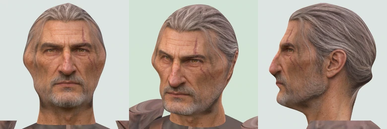
Dragon’s Dogma 2
Dock foreman
A short broad adult with a projecting belly, full cheeks and
glasses. Compare the two human profiles at one scale. The soft chin
is visible in clay, while the fine frames rely on paint.
Three-quarter, front, side and rearInspect the head
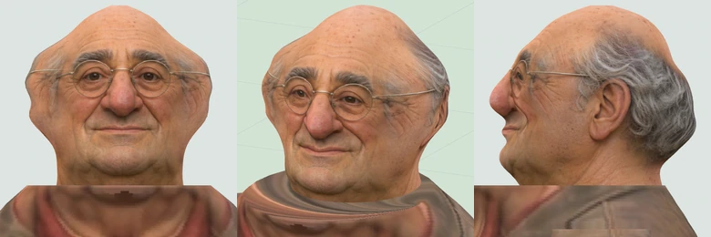
Spore
Reed trader
Four independent arms with separate hands, a long muzzle and a
travelling coat. Maxis singled out the extra hands. Count all four
in three-quarter view, then orbit to see where the lower pair meet
the trunk.
Maxis called attention to the repeated tooth-like armor. The porter
carries fifteen individually selectable dorsal plates. Compare the
rear outline in clay with the shoulder and forearm from the side.
A mature adult with lilac skin, swept hair and a long formal gown.
The skirt has real pleats and its own rig. Base layer reveals the
legs and body inside it. The shoulder silhouette still looks
narrower than the brief.
Three-quarter, front, side and rearInspect the head
The Sims 4
Relay scout
A lean runner in a dark close-cut top, pale trousers and red shoes.
Compare the short bob and leg profile against the cartographer at
equal height. A near-touching hand and trouser edge exposed a defect
in automatic biped fitting.
Three-quarter, front, side and rearInspect the head
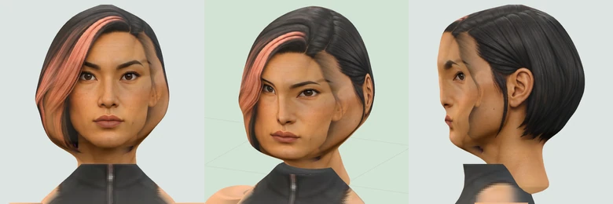
One brief, six live geometry draws
Each attempt began with the same ellipsoid and the same request for a
peaceful marsh companion that could carry samples. Draws 1 and 2
reused the same direction code. Draws 3 to 6 sampled fresh directions.
Every returned model was kept.
In draw order, 1, 2, 3 and 5. Each column uses its own framing so
the outline is easy to compare.
The two repeated directions produced 20- and 24-part animals with
different leg plans. One new direction yielded a stack of shells on
six paddles, another a horizontal body carrying underslung panniers.
The editor measured heights of 1.45, 1.69, 1.34 and 1.20 metres.
Requests 4 and 6 reached the four-minute deadline without a model.
At the same rendered height, the two repeated-direction silhouettes
differed by 0.483 on a 0–1 scale of one minus mask intersection over
union. Pairs with different directions ranged from 0.436 to 0.709.
These four results show that the agent can vary a shared brief. A
larger paired sample is needed to estimate how much extra variety the
cue draw contributes. Primitive feet and repeated jar shapes remain
visible.
In an earlier six-request pilot, four proposals failed with an
undefined-field error, one had invalid geometry, and one timed out.
The editor now supplies identity transforms for new regions and gives
the agent a correction attempt. It also accepts artist-written choice
groups, each with its own pin, for explicit control over what gets
sampled.
On a separate retry of the two timed-out directions, both requests
returned editable models, with 21 and 28 regions in 37 and 377
seconds. The retries used a seven-minute limit and medium reasoning
effort.
Read both retry outcomes.
Each row is one exported GLB in the independent player. Across each
row the phase advances by one quarter of the animation period.
The artist asked a new humanoid starter to become a limbless
salt-marsh eel. In 80 seconds the geometry agent made an eleven-point
trunk, two fins, a wedge head, eyes and asymmetrical crests. The
player measured 0.59 m of peak vertex travel in Slither. The lowest
sampled vertex stayed 7 mm above its floor. The same articulated body
can swim and coil.
The reef cartographer and the plated glider exercise a different rig.
A wing made of spars and plates moves at its shared root. The flight
fitter measures the lowest wingtip and lifts the loop where needed. An
early glider export dipped 6 cm below the ground. The repeat
measurements are in the
playback report.
Can an artist tell the agent exactly where two extra arms belong?
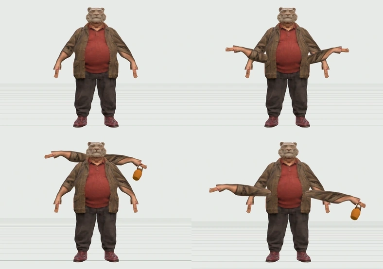
Top left is the repaired two-armed worker. Top right is an artist-directed four-arm version. Bottom left is the first AI proposal, with the extra arms beside the neck. Bottom right is the marked correction after fitting the moving attachments. All four exports stand 1.515 m tall.
Maxis singled out the second pair of hands on Karl-EL’s Sanu-Kish Merchant. This experiment starts with our existing harbour worker and asks for that structural feature and a spice jar. An early copy exposed an error hidden inside the trousers. The source’s left hand contained a patch of thigh. Fitting fingers to the right hand and mirroring its complete arm restored both branches before either trial. Maxis Captain Postcard Challenge winners
In the artist trial, two pairs of clicks placed two articulated arm copies on the sides of the worker. In the agent trial, the same starting body received a written request for arms at the lower ribs. The agent built the branches and a jar in five operations but put both shoulders beside the neck. The artist then marked two actual surface points and named them in a second request. Both requests included two renders and the world bounds of the parts. The agent used two moves and carried the jar along. Both accepted operation sequences replayed exactly.
Distance from the rib mark to the nearest sleeve triangle
Character right
Character left
Before the correction
443.8 mm
422.6 mm
After the marked AI move
5.5 mm
4.3 mm
After seating the moving shoulders
8.1 mm
7.6 mm
The corrected model still lost one shoulder connection during Reach, and the jar missed its loop. The artist seated the ends of the sleeves and moved the jar rim onto the loop. All 15 arm and jar connections intersected at rest and at 12 samples in each of four exported clips, or 735 pair-and-pose checks. The four hands contain 20 articulated digits. On the 192-pixel front view, each hand retained 73–83% of its projected area. Two far hands were fully hidden in exact profile.
The trial tests one location-specific revision. The upper sleeves still show a blunt transition into the coat and the jar is a simple unlabelled prop. Visual likeness to the original Spore captain and unsampled movements remain open.
The rows show the original, first reroll and refinement from top to
bottom. Each row shows the front, profile, unpainted three-quarter
view and saved greeting. All three use the same world scale and
crop.
For the shopkeeper silhouette and extra hands, the artist supplied
Karl-EL’s Sanu-Kish Merchant as a garment reference. Two choice groups
drew an aquatic tail and a net of yellow fruit. The first live Codex
pass took 105 seconds and expanded the 41-region character to 69
regions. The tail read in profile, while the fruit hung directly in
front of it.
The second pass received two rendered views, the reference, bounds for
all 69 regions and a request to move the cargo behind the left hand.
In 69 seconds it produced 18 edits. The seven fruit now center at
(0.399, 0.779, −0.123) m in character-left, up and
forward coordinates. All three coordinates meet the requested
placement. The two front coat panels grew from 13 cm wide to 26 and 24
cm. The eight protected limb records and the saved greeting survived
both passes.
The refined export has 24,024 triangles, one material and six clips,
including Swim. The change in side silhouette from the original
measures 0.444 using one minus mask intersection over union. In close
profile the fins float above the tail. No fin intersected the tail at
rest in the reduced mesh. The nearest sampled vertex-to-surface
distances were 17 mm at the dorsal fin and 25 and 77 mm at the lateral
fins.
Same camera and pose in the independent GLB player. Left shows the second AI proposal. Right shows the six fittings applied in the editor.
In Build parts, select a root face on a fin and choose Seat on parent. The editor measures from that face to the tail triangles and embeds the face by the specified depth. It borrows the local animation weights at the joint. A rib can follow the blade along its entire length. These fittings used 10 mm for the fin roots and 6 mm for the ribs.
Each of the six pairs intersected at rest and at twelve phases in each of six clips, for 438 of 438 sampled contacts. The weakest observation still had seven child triangles crossing the parent. The test establishes physical overlap at each sample. The profile still has angular folds, and the crossings do not measure smoothness or watertightness.
Only the fitting instructions on six of the 74 regions changed. The greeting, hand records, fruit and coat carried through. The reduced export contains 24,008 triangles, one material and one skeleton. Khronos validation reported zero errors and zero warnings. Click a fitted region in the player to read its name and its position in metres.
The same reduced GLB at rest and in its saved greeting pose. The
highest hand moves outward, the opposite upper hand reaches forward
and a lower hand crosses the body. The remaining hand stays at rest.
The Spore target is Karl-EL’s four-handed Sanu-Kish Merchant, a Maxis
community winner. The workshop study has four hands attached in two
pairs. Starting from its rest shape, the artist turned four joints
with relative nudges, saved the stance, reopened the recipe and
exported the model. The saved form’s geometry and materials were
identical to the starter. The reopened pose rendered pixel-for-pixel
identically in the editor.
In the 20,684-triangle GLB, the centers of the three edited palms
moved 56.3, 23.8 and 37.8 cm. The fourth palm and the trunk each moved
less than 0.001 mm. Measurements use vertices weighted at least 95% to
each named region. All five clips are playable in an independent
Three.js scene. The arms still overlap from the side and the shoulder
attachments have visible seams.
Four reduced GLBs, rendered in a separate Three.js player with the same camera. All measure 1.764 m. The source form retains its original 14 body regions and their paint. The concert outfit adds a single editable skirt.
The running outfit uses Vesbesit’s Faith Connors as its target. The concert skirt takes its outline from simcrazy5’s Lady Ursula. Both players’ creations were selected by PC Gamer. In the workshop, mark the waist centre, one waistband edge and that side of the garment down to the floor. This trial used 18 clicks on the published screenshot of the Sim. Only the normalized trace is saved. PC Gamer selection · Faith by Vesbesit · Lady Ursula by simcrazy5
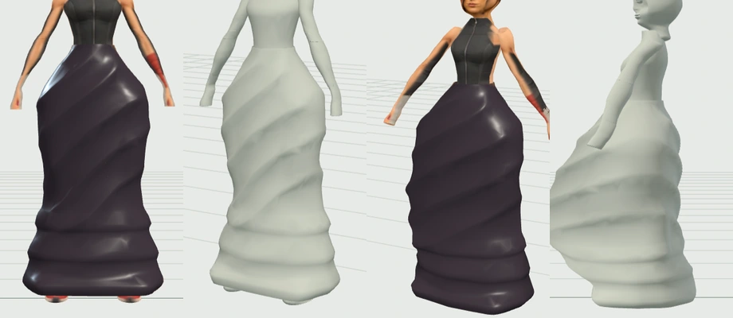
Front, clay three-quarter, walk and crouch. The first reduced model lost the diagonal gathers. Giving the two cloth surfaces 7,680 of the final 23,996 triangles recovered the diagonal ridges and tiered hem.
Front silhouette
Ursula’s traced skirt
Runner’s exported skirt
Knee width ÷ hip width
0.87
0.88
Lower hem width ÷ hip width
1.18
1.21
Widths are horizontal slices at 27%, 57% and 93% of the waist-to-floor cut. The runner’s fitted widths are 52.4, 46.2 and 63.4 cm. The waistband follows the runner’s own torso. The source has an embroidered clasp, a wrapped bodice and several shallower folds. This version retains the runner’s original top and shoes. Its crouch looks stiff where the skirt expands over both knees.
The initial moving skirt crossed 315 fabric triangles against the legs in the worst of eight walking samples. The revised export uses 156 cloth joints driven by the actual leg surfaces during its baked clips. Across rest and 25 samples in each of four clips, the exported skirt had zero triangle crossings against the torso or either leg, including shoes. Its lowest sampled hem point was 1.2 cm above the floor. New game-engine animations would need their own cloth tracks. Loading the original running outfit again produced identical mesh positions, indices, weights and front-view pixels.
One GLB loaded once into a separate Three.js scene. Each outfit is shown 37.5% through the walk, with the camera held still. Returning to the track outfit reproduced the first frame pixel for pixel.
In Forms, choose Game detail, include motion and enable Export all saved outfits as selectable scenes. Each named glTF scene owns its meshes and joint hierarchy. The three shorter outfits use 31 joints each. The concert dress takes 190 to preserve its moving folds. Switching scenes carries the phase into the next outfit’s clip.
All 82 mesh and morph accessors and 421 animation tracks compared equal to the four individual exports. The bundle is 16.06 MB and loads all four looks up front. Each active look draws one material and roughly 24,000 triangles. Blender 5.3 RC imported four separate armatures with its Import Scene as Collection option enabled. Each animated when its collection and walk track were activated. The Khronos validator reported zero errors and warnings.
Top row shows the earlier export. Bottom row shows the same recipe
after fitting the panels around the arms and transferring some arm
movement to the cloth.
We intersected the actual triangles of the arms and fabric in the
exported game models at eight points in each of four animation loops.
The table reports the average total length of intersection curves in
metres per pose. Both sides of a sewn panel contribute to this figure.
Wearer and layer
Earlier export
Revised export
Revised poses clear of crossings
Researcher in a cape and tabard
3.625 m
0.007 m
24 / 32
Broad pressure suit with poncho
4.362 m
0.010 m
31 / 32
Four-armed trader with covered cape
3.862 m
0.310 m
0 / 32
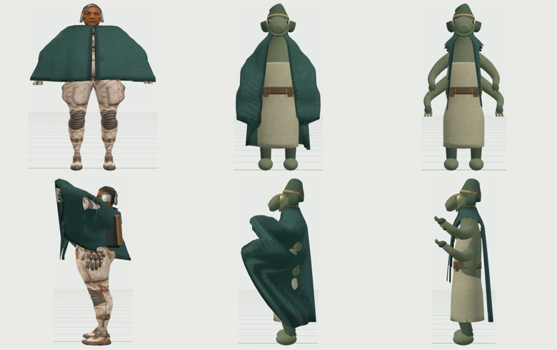
Left to right, a pressure-suit poncho, a covered four-arm cape and
the same cape with open sides. The models are individually framed.
The covered four-arm cape still bunches and crosses the arms at full
reach. Selecting open sides eliminated crossings at all 32 samples.
That choice reduced the cape’s two-sided fabric area from about 4.7 to
1.4 m². The artist can choose how much coverage the character needs.
These measurements cover arm intersections at sampled poses.
Cloth-to-cloth contact and collisions between samples remain
unmeasured.
Compare sizes displays two actual meshes with one camera and one
floor. Pin an earlier revision or open another saved form.
The original eel measured 0.291 m overall. Adding the crest raised
that to 0.915 m while the top of its head stayed at 0.253 m. We set
head height to 0.316 m and exported again. The model then measured
1.144 m overall in both the editor and the game mesh. All five motion
clips survived. Undo restored the original measurements.
A backpack also exposed a defect in body sculpting. Its extra depth
shifted the frame used for body mass and moved facial vertices by as
much as 55 mm. The sculpt now measures the original body regions. On
that same broad-shouldered wearer, all 4,293 measured face vertices
held their world positions through the pack change across the base,
work and pressure outfits.
Head height measures the actual head surface above the lowest visible
point. Separate hair and headgear are excluded from the upper
measurement. Hair baked into the head mesh and changes to footwear
still count.
Grow a crest with an opening through the bone
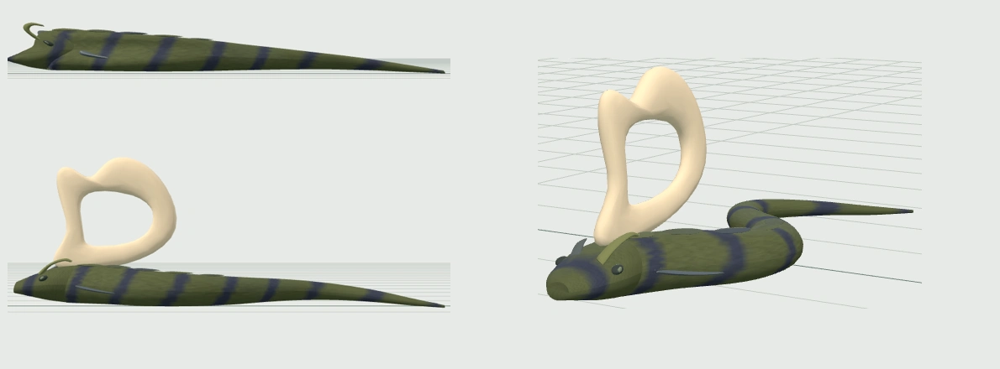
The same sixteen protected parts appear in all three views. The new
crown has forty-eight control points and forty-eight faces.
The artist requested an asymmetric bony sail with a large opening and
two blunt knobs. A live agent built one connected mesh in 29 seconds.
Its first proposal tagged the sail as a clothing accessory. This hid
the entire crown in the base outfit. Clearing that one clothing field
in the editor made the anatomy visible. The preview now names newly
added parts that the current outfit hides.
The exported sail measures 70 cm high. We traced a ray through the
centre of its opening in the actual game mesh. It passed through clear
space. A parallel ray through the rim crossed two surfaces. The
profile opening spans about 45 × 34 cm. The five animation clips
survived reimport. This case establishes an editable through-hole. The
crest still has a narrow attachment to the head.
The same face and vest before and after the lower-body revision.
These views are framed individually.
The artist locked the face, arms, torso and printed vest and asked for
a sea-cave surveyor. A 34-second geometry proposal removed both legs
and grew a serpentine tail, two fins and eight scutes. All 20
protected part records matched the parent exactly. The independent GLB
player measured 0.53 m of vertex travel during Slither and 2.66 m
during Coil. The tail dipped 9 mm through its floor during Coil. The
small fins look flat from the side.
The artist requested indigo canvas, ivory contours and a terracotta
patch. Both captures use the same camera and pose.
The image tool repainted the accepted four-view garment. Twelve
garment regions acquired a new color source and all 26 original parts
kept their geometry, material settings and attachment transforms. The
silhouette masks were identical. This test covers one fitted garment.
Other prints may drift across seams.
Editable printed vest
· Open in the workshop
Hair beyond a change of color
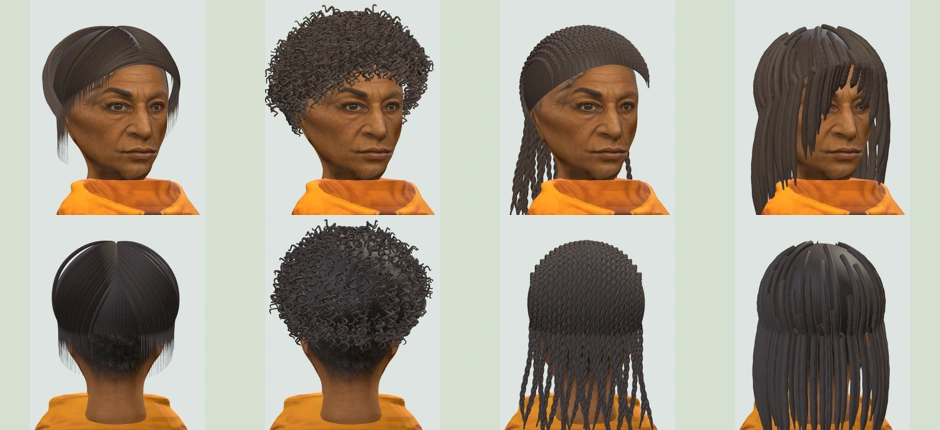
The same face and pigment appear in every column. Parted locks
follow a line over the crown, coils have helical fibres, braids
interlace three strands, and locs form tapered bundles.
The haircut and its seed travel with the editable head. Hair length,
sweep, volume and color can be edited. The braids are actual geometry
in the exported game model. Fine strands and the smooth base cap
remain visible at portrait distance.
Editable braided portrait
Can a second view shorten the nose and keep the glasses on?
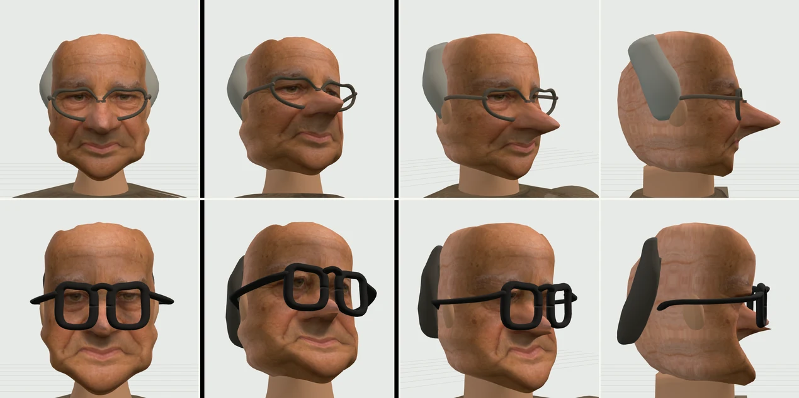
Top is the earlier fitted dockworker. Bottom is the new game export. The second column looks up at the head from the estimated angle of badtrouble’s full-body screenshot.
Badtrouble’s final Frank Reynolds pawn appears in a near-frontal portrait and a low-angle full-body view. The head in the latter is about 100 pixels high. We matched its pose by eye at −24° turn and −15° elevation, registered the pupils, and paired six locations on the nose. The depth fit moves the mesh forward or backward and can mirror the correction across the nose. Creator’s final two-view showcase
Mean projected error at model scale
Earlier GLB
Revised GLB
Six points used to steer depth
30.76 mm
7.16 mm
Four more points in the low-angle image
29.66 mm
6.36 mm
Seven points in the separate near-frontal portrait
7.23 mm
7.36 mm
Each measurement follows the same skin location through the reduced meshes using its texture coordinates. The near-frontal portrait supplied no points to the depth fit. Its small increase in error is below one source pixel. The actual camera calibration and physical facial measurements are unknown.
The first live AI edit used the original portrait to revise seven accessory parts and add six hair pieces. The soft fit bent the frames into the cheeks. Fitting them rigidly and clearing the cheeks exposed another error. The front was 225 mm wide. A second AI direction requested 145–155 mm overall and a 9–13 mm inner gap. Its five edits produced 151.7 mm and 11.1 mm. The artist then seated each temple end on the head. Original reference for the accessory edits
At rest and six phases of each of four clips, both rims joined the bridge and temples, both temples met the head, and no front rim or bridge triangle crossed the facial mesh. The nose retains a sharp lower edge in profile. The side hair reads as thick clumps, and the game frames have more slanted sides. Full likeness remains open.
What changes when the artist pairs features on two faces?
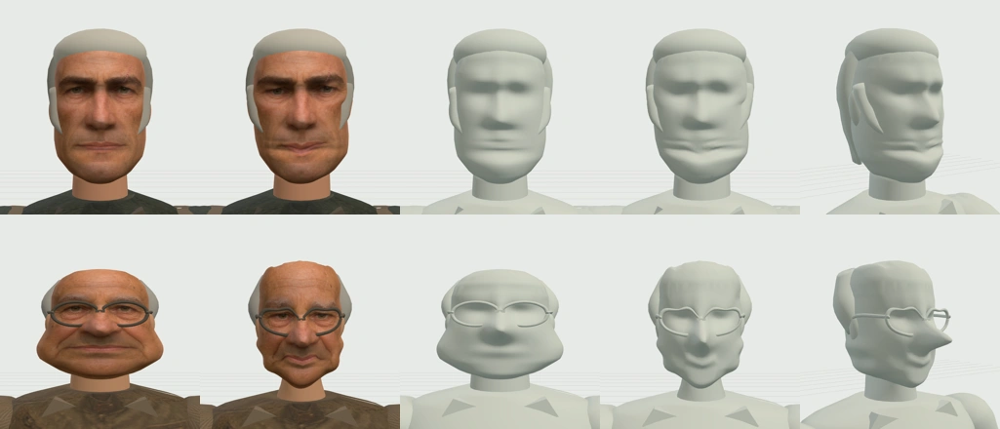
Top is the profile-fitted ranger, steered with a second photograph of Lincoln. Bottom is the dockworker, steered with badtrouble’s Dragon’s Dogma 2 screenshot. Each row shows the original and fitted front in color, the same two in clay, then the fitted head in three-quarter.
Select a head and open Match facial landmarks. Pair two points to register the images, then mark features such as pupils, nostrils, mouth corners and the scalp contour. The fit moves nearby geometry, its surface paint, fitted eye patches and attached pieces. The first prototype left the dockworker’s glasses and side hair behind. Carrying those meshes through the same deformation brought them back onto the head. The artist can stack passes and remove the latest one.
Input head and reference
Selected features, mean error
Five additional features
Ranger and Gardner’s frontal Lincoln portrait
8.74 → 0.66 mm (14)
6.52 → 8.23 mm
Dockworker and the Frank Reynolds pawn
30.48 → 1.18 mm (28)
18.55 → 5.66 mm
The two alignment points are excluded. The measurement follows each material location by its texture coordinates through two separately reduced GLBs and measures the distance in the frontal plane. The five additional locations on each reference were annotated separately from the steering points. The ranger’s earlier profile error across 17 heights changed from 1.32 to 1.38 mm.
The dockworker acquired a taller bald dome and narrower jaw. Its oval frames, pointed nose and face paint still differ visibly from the game screenshot. The ranger’s intermediate frontal points grew less accurate. A good score at the chosen points gives limited evidence about the features between them. Both exports keep four motion clips and pass Khronos validation with zero errors or warnings.
Left is Anthony Berger’s February 1864 photograph of Abraham Lincoln. The four clay views are the two reduced game exports under the same lighting. Profile and three-quarter views each show the original followed by the fit.
The Geralt benchmark calls for control over an angular brow, nose and jaw. Here the editor starts with the original scarred ranger. The artist traced 26 points from the brow ridge to the lower chin in a cropped photograph. The fit uses the depth of the triangle surface at each height and tapers the change across the face. Only the head region acquired a new instruction. Shape from a side portrait lets an artist scale or release the fit later.
At 17 intermediate heights read separately from the same photograph, mean absolute depth error fell from 15.07 mm to 1.32 mm. The largest intermediate error fell from 40.20 to 5.26 mm. The 26 traced heights went from 15.57 to 1.58 mm on average. Distances use the model’s 191 mm brow-to-lower-chin interval. They measure its profile after alignment to the image, whose physical scale is unknown.
The head acquired a clearer nose tip, upper lip and chin in profile. An early version also pushed the outer cheeks forward at lip height. Tapering each displacement towards the cheek improved the oblique view. The ranger still has the original hair, eyes and overall head shape. Recognizability as Lincoln and agreement with a second photograph remain untested.
Can the eyes turn without changing the face at rest?
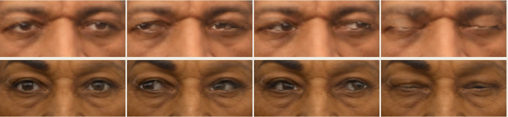
Neutral, look to the viewer’s left, look to the viewer’s right,
blink. Both rows come from reduced game exports. The room lighting
and camera stay fixed for each row.
The first experiment placed procedural irises over the source
paintings. In front view, fitting them changed 2,785 pixels on the
historical portrait and 2,295 on the biologist by more than 32 of 255
in at least one color channel. Fitting the painted eye openings and
deforming the artwork kept every pixel within that tolerance in both
neutral editor renders.
In the independent GLB player, opposite glances changed 2,681 and
2,247 pixels respectively at a threshold of 15. With the lids fully
shut, both counts fell to zero. An early reduced export let the iris
show through the closed lid. Assigning more of the same triangle
budget to the eye surfaces and the face corrected both test cases. The
two final exports contain 24,031 and 23,995 triangles.
The fit uses the visible artwork. Extreme glances can stretch a
painted highlight, and the shared 1,024-pixel atlas softens details at
this magnification. The test covers two front-facing portraits. It
measures motion and preservation of the original art. The historical
likeness still needs its own assessment.
From left to right, the 1870 photograph, the fitted color model with
its source hairstyle, the same model with the hair off, the initial
clay face and the face with generated depth. All four 3D views use
the same camera.
The first request supplied the photograph with a neutral filename and
asked for a 3D likeness. The accepted head preserved the other 25
regions of the rescue-vest character. A second image pass inferred the
hidden scalp. The editor aligned it using pupil spacing and
eye-to-chin height and kept the original hairstyle as a removable
mesh. The earliest scalp fit lost its landmarks when the traced head
stopped above the neck. Reusing the generated pictures with a
full-portrait fit recovered the model.
A third image pass took 43 seconds and supplied frontal depth. Fitting
the brightness separately on every row produced sharp ridges at the
eyes and nose. One depth calibration across the face produced the
result at right. The new brow, cheeks and moustache remain visible in
clay. The source has a softer expression, and the ears and hairline
still need work. Likeness to this specific sitter has not been
independently scored.
Using the source photograph again, the artist requested a relaxed
brow, a higher forehead and a softer expression. The revised image
and six paired depth landmarks took 98 seconds. The opposite
eye-level camera makes the pose easier to compare. The hair still
reads as one broad mass in clay.
Editable revision
Left to right, rest, extended and bowed, then bent sideways. The
wing spars, limbs and dorsal plates follow their sockets on the
reshaped torso.
The editor changed all 13 direct attachment positions on this glider.
Each change stores ordinary part transforms in the editable form. A
whole-spine nudge can adjust bow, side bend, length and tip girth.
Individual points can also be dragged in the viewport.
Editable glider
· Open in the workshop
Cut and layer clothes on one wearer
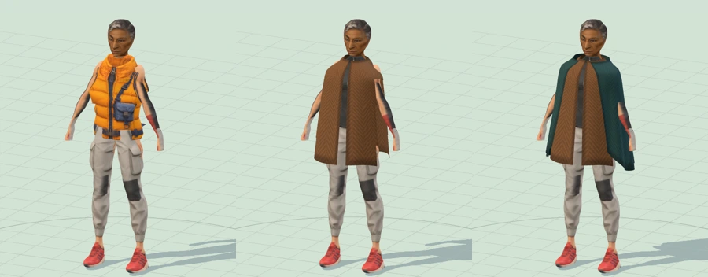
Three saved outfits on the same wearer. The second has an open-sided
tabard cut to the torso. The third has a longer cape cut around the
tabard as an outer layer. Both garments retain editable
measurements.
The original 26 regions survived exactly. Two fitted layers bring the
total to 28. Saved outfits record visibility, dye, order and base
clothing. Wearing an earlier set restores the clothing shown when it
was saved. The exported wet-weather set played all four animations
with its lowest vertex 4 mm above the floor at eight samples per clip.
Cloth uses fitted geometry and skeletal animation. Wide arm movements
can still pass through a hanging panel.
One 3D pigment field sampled by 17 regions. The artist controls
spacing in centimetres, coverage, direction, color and placement.
All vertices carry the resulting color into the GLB.
The ringed animal fell from 70,086 triangles and 21 materials to
23,997 triangles and one material. At a fixed camera, full and game
exports shared more than 99% of the silhouette at rest and during
Walk. Mean absolute color difference within the shared mask was under
3 out of 255 per channel.
Read the measurements ·
Open the marked form.
Can the artist choose the anatomy?
One artist-written choice group specified
Walking legs = 3 | 5 | 7 | 8. Two prespecified draws used
the same locked ellipsoid, brief, built-in cues and magnitude. The
first requested three legs and the second eight. Both proposals were
kept as alternatives to the same starting form.
Identical body geometry in both models. Several feet overlap in this
view. The attachment graph contains three limbs and three terminal
feet in the first model, eight of each in the second. The locked
body dominates both silhouettes.
The first proposal took 36 seconds and the second 95 seconds. This
tests compliance with two explicit draws. It does not estimate the
frequency of each result over repeated requests. Open the
tripod and
eight-legged form
to inspect each attachment. The
trial record contains the
wording, codes and part IDs.
Faces and moving skin in a game
Four edits to the same head. Length, curl, crown volume, sweep and
gathering change actual geometry. Each adjustment can be undone.
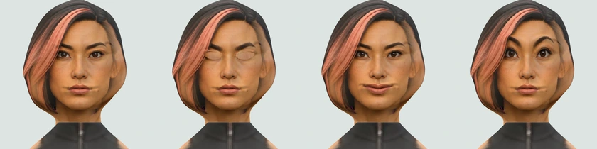
Rest, blink, smile and brow lift on the same 3D head. The eyelids
carry skin sampled from the portrait.
The GLB keeps the facial poses as named morph targets. The standalone
player can apply them by name. Two heads were exported at full detail,
game detail and as static game meshes. All six files passed the
Khronos glTF validator with zero errors and warnings.
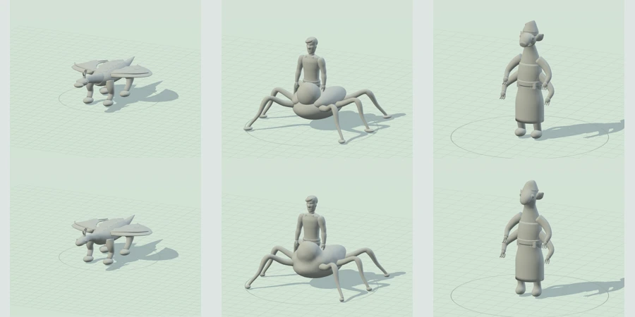
Separate regions above, joined skin below. The hybrid's chest and
abdomen show the largest difference. Fine legs retain their authored
contours.
Joining organic regions removes interior surfaces at their seams. Each
region keeps its editable part and rig attachment. Shared vertices
follow neighbouring joints during motion. Three additional characters
passed GLB validation at both detail settings.
Live painted rerolls
The painted trials started in the editor with an existing model, a
random design direction and written instructions. The local Codex CLI
generated fresh artwork and supplied matching front and profile
outlines. These files reopen with their source art and editable
regions.
A hooked tail and two thin fins
Maxis selected Himmelslaub’s Lok-nau-tan for its graceful aquatic
build. We used that quality as a held-out target for an original reef
cartographer. A single ellipsoid, written instructions and a direction
draw produced the first painted model in 219 seconds.
Maxis Captain Postcard Challenge winners
The upper row is the first fit. The lower row is a second AI fit of
the same source image.
The initial horizontal cross sections turned a hooked tail into a
bowl. Fitting a curved centreline through corresponding front and
profile landmarks restored the hook. Thin membranes now join the
shoulders. The first AI refit request timed out. The next returned
twelve editable regions, including two wing membranes and an
eight-landmark tail. Its game-detail GLB passed Khronos validation.
The webbed hands remain coarse.
Generated front view, first 3D fit and revised 3D fit.
A request for a four-legged grazer with a forked lantern and
saddlebags took 187 seconds to reach its first proposal. A failed part
map reduced that result to one volume. Refitting the same image
recovered 15 regions including separate legs, lantern leaves and bags.
Profile paint leaves an extra eye-like marking on the right cheek.
Slender tips still need sculpting.
Open the grazer recipe in the workshop.
A new head on an existing person
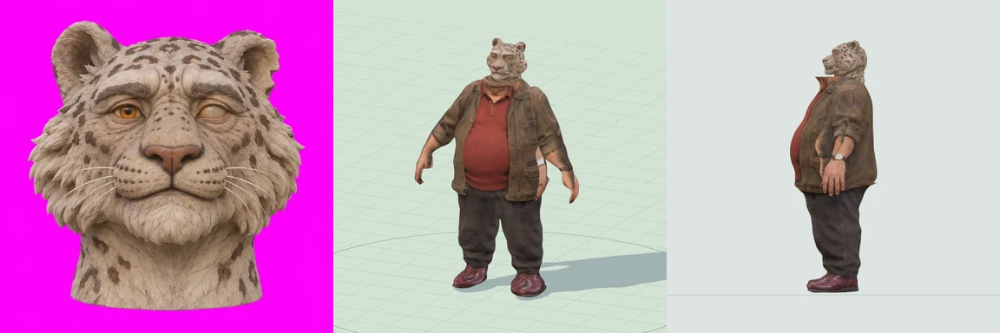
Generated front view of the head, assembled worker and profile.
The six Beastren shared by Exciting-Ebb-4205 suggested a species
change. We selected the human foreman’s head and asked for an elderly
snow leopard. In 99 seconds the editor returned eight editable
regions, including a muzzle, jaw, ear pair and cheek ruffs. The other
13 original regions, wardrobe and appearance settings matched the
starting recipe.
Community target
·
Open the worker recipe in the workshop.
Changing a single garment
One accepted recipe in its three wardrobes.
With the runner’s torso protected, a live painted edit generated a
sleeveless rescue vest in 134 seconds. Fitting by its lowest panel
alone stretched the collar over the wearer’s face. Using the whole
garment’s dimensions, a backing for closed garments and a clearance
check at each body cross section corrected the fit. The vest is
attached only to work clothes. The underlying body and the other
wardrobe choices remain editable.
Open the rescue vest recipe in the workshop.
A new face that can still move
Four poses on one freshly generated portrait, under the same
lighting and camera. Five front-view landmarks connect the new
artwork to local sculpt controls and exportable expression targets.
A head-only request changed one of the rescue-vest wearer's 26
regions. All 25 other region records stayed identical. The first
multi-piece fit left a gap at the neck. Reusing the same generated
artwork and trace map to fit one continuous scalp, jaw and neck closed
the gap. Open the
editable coastal biologist
to orbit the result.
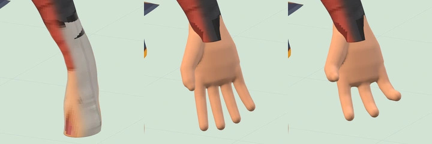
A separate edit on this wearer. Fitting fingers adds a smooth palm,
an opposable thumb and three animated joints per digit. Curl and
finger count change the mesh. The original sleeve texture ends at
the wrist.
The biologist with both hands fitted was 1.764 m tall in the
independent player at both export settings. Game export reduced
389,658 triangles and 26 materials to 24,004 triangles and one
material. The two fixed camera angles gave 99.2–99.5% silhouette
overlap at rest and during Reach. All 27 finger joints remained in the
exported animation. This compares outlines at the test resolution.
Pupil detail and small seams require separate close-up inspection.
Can faces be recognized from shape alone?
We started all six faces from the same head, hairstyle and paint.
Relative nudges changed jaw width, nose projection, eyes, mouth and
chin. A blinded Fable 5.2 High reviewer matched all six clay
three-quarter views in a pressure suit to their front and side
references in work clothes. Reported confidence ranged from 0.60 to
0.75. Across this single one-to-one trial, nose projection, mouth
width and jaw taper carried most of the distinction.
Try the same six-way match
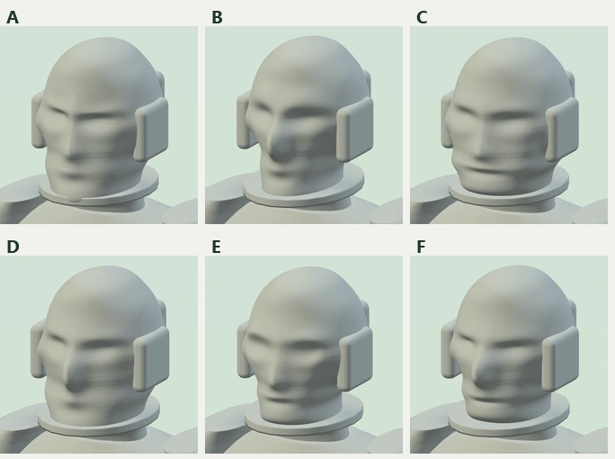
Answer key
A–6, B–2, C–1, D–4, E–3, F–5.
The reviewer also identified horizontal ridges across cheeks and
indistinct eyelids. A subsequent mesh revision smooths profile depth
away from the midline and models eyelids, nostril rims and lip edges.
The recognition score above applies to the original trial.
Inspect the revised clay heads.
What the experiments showed
Experiment
Observation
Recognize form without paint
A blinded Fable 5.2 High review correctly matched six shuffled
clay studies to six descriptions in a single forced-choice
trial. The cartographer and scout earned medium confidence. The
observer relied on clothing and hair for those two. Four arms
and a flared gown were much easier to recognize. This trial
measures broad character types. Facial likeness needs close
distractors and human raters.
Reach a new structure
Two accepted live Codex proposals produced a six-legged beetle
and a low four-legged estuary glider. The glider’s crest became
visible after fixing how children attach to small primitives. In
a separate trial starting with the foreman, one accepted
response grafted a painted clawed arm and three shell plates
while preserving the protected face. Its oversized arm obscured
part of the silhouette.
Take the result into a game
Fourteen exported GLBs passed the Khronos validator with zero
errors and warnings and loaded in a separate Three.js player.
Each contains an articulated skin and four clips. Eight poses
per clip were inspected using the skinned vertices. This exposed
up to 20 cm of floor penetration in long skirts. After adding
hem joints and correcting the root from sampled sole heights,
all fourteen stayed within 2 cm of the floor in this test.
Preserve openings and reduce game meshes
At revision d6d89ef, a front ray passed through the
Tidebell shell opening and struck the rim in both exports. Game
detail reduced this model from 147,296 triangles and six
materials to 23,998 triangles and one material, from 25.7 MB to
2.8 MB. Across five separate paired exports, three-quarter
rest-pose silhouette overlap was 99.6–99.9%. Both detail levels
passed the Khronos validator.
Comparison measurements.
Check variety at equal height
Foreground masks are bottom-aligned and rescaled to 192 pixels
tall. For each pair the score is one minus intersection over
union. Identical contours give zero. Compare front and side
separately. Front and rear orthographic silhouettes are almost
identical under reflection for these mostly symmetric bodies.
Measured pairwise scores.
Try to break the result
Start with a fresh form. Protect the face, pull one shoulder outward
and ask for an asymmetrical bulky suit. Check side and rear views,
then play Walk and Crouch. Compare the same character in base layer
and work clothes. A recognizable result from a different camera and
outfit is a tougher test than selecting an authored study.
The game comparisons cover the selected features. The current
measurements leave open likeness under close facial distractors,
automatic fitting of arbitrary garments, and locomotion on uneven
terrain. The 2D consistency experiment remains in the
research plan.